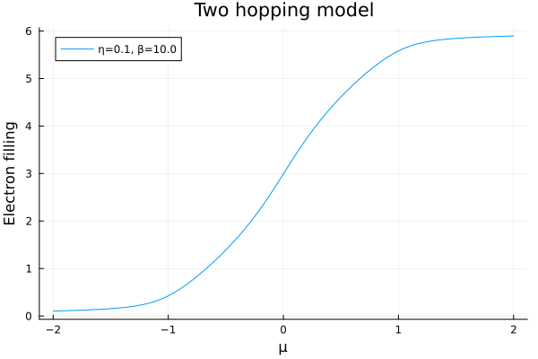
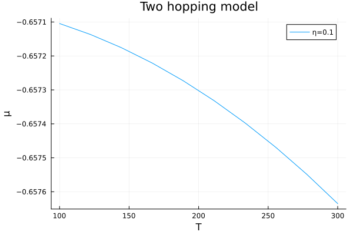

Electron density
The electron density describes the number of electrons in a system. It can be calculated by integrating the DOS times a Fermi distribution over all frequencies. Often calculations of the density are needed to ensure charge self-consistency. After walking through these tutorials, continue with the demos/chem_pot_test.jl script that compares several algorithms for the calculation of the electron density of a Wannier90 Hamiltonian using the load_wannier90_data interface and a frequency-dependent self energy using the load_self_energy interface.
While AutoBZ provides electron density solvers that use real frequency integration, we recommend using the methods explained in Electron density from the imaginary-frequency Green's function due to their improved efficiency.
Model calculation
For this tutorial and the optical conductivity tutorial we define a simple tight-binding model based on $t_{2g}$ orbitals with a nearest neighbor intraband hopping and a next-nearest neighbor interband hopping.
using StaticArrays
using OffsetArrays
using AutoBZ
H = OffsetArray(zeros(SMatrix{3,3,Float64,9}, 3,3,3), -1:1, -1:1, -1:1)
# intraband hoppings
t = -0.25 # nearest-neighbor hopping
H[ 1, 0, 0] = H[-1, 0, 0] = [ 0; 0; 0;; 0; t; 0;; 0; 0; t]
H[ 0, 1, 0] = H[ 0,-1, 0] = [ t; 0; 0;; 0; 0; 0;; 0; 0; t]
H[ 0, 0, 1] = H[ 0, 0,-1] = [ t; 0; 0;; 0; t; 0;; 0; 0; 0]
# interband hoppings
t′ = 0.05 # next-nearest neighbor hopping
H[ 0, 1, 1] = H[ 0,-1,-1] = [ 0; 0; 0;; 0; 0;t′;; 0;t′; 0]
H[ 0, 1,-1] = H[ 0,-1, 1] = -[ 0; 0; 0;; 0; 0;t′;; 0;t′; 0]
H[ 1, 0, 1] = H[-1, 0,-1] = [ 0; 0;t′;; 0; 0; 0;;t′; 0; 0]
H[ 1, 0,-1] = H[-1, 0, 1] = -[ 0; 0;t′;; 0; 0; 0;;t′; 0; 0]
H[ 1, 1, 0] = H[-1,-1, 0] = [ 0;t′; 0;;t′; 0; 0;; 0; 0; 0]
H[ 1,-1, 0] = H[-1, 1, 0] = -[ 0;t′; 0;;t′; 0; 0;; 0; 0; 0]
H = HamiltonianInterp(AutoBZ.Freq2RadSeries(FourierSeries(H, period=2pi)))3×3×3 and (1.0, 1.0, 1.0)-periodic HamiltonianInterp in Wannier() gaugeWith this Hamiltonian we can define an ElectronDensitySolver that computes the electron density at a given temperature and scattering rate.
using LinearAlgebra
bz = load_bz(CubicSymIBZ(), Diagonal(collect(AutoBZ.period(H))))
η = 0.1 # eV
β = 10.0 # 1/eV
Σ = EtaSelfEnergy(η)
atol=1e-3
rtol=0.0
solver = ElectronDensitySolver(H, bz, PTR(npt=50), Σ, QuadGKJL(); β, abstol=atol/nsyms(bz), reltol=rtol);Here, we have chosen to the order of integration to compute a frequency integral for each $\bm{k}$ point. We can compute the density over a range of chemical potentials and account for the normalization of the integral
using Plots
freqs = range(-2, 2, length=100)
plot(freqs, μ -> (AutoBZ.update_density!(solver; β, μ); solve!(solver).value*2/det(bz.B)), title="Two hopping model", xguide="μ", yguide="Electron filling", label="η=$η, β=$β")
Chemical potential finder
Using the electron density solver above, we can easily create a chemical potential finder from SimpleNonlinearSolve.jl root-finding algorithms.
using SimpleNonlinearSolve
number_density(μ, (solver, n_sp, ν, V, β)) = (AutoBZ.update_density!(solver; μ, β); ν - solve!(solver).value*n_sp/V)
interval = (-1.0, 1.0)
prob = IntervalNonlinearProblem(number_density, interval, (solver, 2, 1.0, det(bz.B), β))
solve(prob, ITP())retcode: Success
u: -0.6696065249160239In this way, it is possible to study the temperature dependence of the chemical potential.
using Plots
temps = range(100, 300, length=10)
f = T -> solve(remake(prob, u0=interval, p=(solver, 2, 1.0, det(bz.B), inv(8.617333262e-5*T))), ITP()).u
plot(temps, f, title="Two hopping model", xguide="T", yguide="μ", label="η=$η")
It is important to note that if you are using a frequency-dependent self energy that you should check the total number of electrons in the system is as expected. This can be done by integrating the DOS over all frequencies at a given chemical potential. For example, setting β=0 in the calculation above would compute half of the total number of electrons.
Electron density from the imaginary-frequency Green's function
AutoBZ provides a robust numerical method to obtain the finite-temperature electronic density of a tight binding model through an extension to Lehmann.jl. The key tool in this procedure is the discrete Lehmann representation (DLR) [1], which we use to efficiently calculate the finite temperature electron density defined by $n(\mu) = \int_{-\infty}^{\infty} d\omega\,f(\omega-\mu) D(\omega).$ Here, $n(\mu)$ is the number of electrons at chemical potential $\mu$, $f(\omega) = 1/(e^{\beta\hbar\omega}+1)$ is the Fermi-Dirac distribution at inverse temperature $\beta$ and $D(\omega)$ is the density of states that is defined in terms of the single-particle Green's function, $G(\omega)$, as: $D(\omega) \equiv \lim_{\epsilon \to 0^+} \frac{i}{2\pi}(G(\omega+i\epsilon)-G^\dagger(\omega-i\epsilon)).$ Since $G$ is a function that is analytic in the upper half plane, we can use contour integration to write the number of electrons as $n(\mu) = -\sum_{n=-\infty}^{\infty} G(i\omega_n+\mu),$ where $\omega_n = \frac{\pi}{\beta}(2n+1)$ is a fermionic Matsubara frequency. The DLR provides a controlled approximation to the Matsubara summation using a finite number of terms through its relation to the imaginary time Green's function, $n(\mu) = -G(\tau=\beta, \mu)$. It is advantageous to compute $G$ at imaginary frequencies because they introduce additional broadening that facilitates BZ integration without needing a self energy. In fact, working at imaginary frequencies allows non-interacting calculations with no self energy! Here is how we would do such a calculation in AutoBZ:
using StaticArrays
using OffsetArrays
using AutoBZ
H = OffsetArray(zeros(SMatrix{3,3,Float64,9}, 3,3,3), -1:1, -1:1, -1:1)
# intraband hoppings
t = -0.25 # nearest-neighbor hopping
H[ 1, 0, 0] = H[-1, 0, 0] = [ 0; 0; 0;; 0; t; 0;; 0; 0; t]
H[ 0, 1, 0] = H[ 0,-1, 0] = [ t; 0; 0;; 0; 0; 0;; 0; 0; t]
H[ 0, 0, 1] = H[ 0, 0,-1] = [ t; 0; 0;; 0; t; 0;; 0; 0; 0]
# interband hoppings
t′ = 0.05 # next-nearest neighbor hopping
H[ 0, 1, 1] = H[ 0,-1,-1] = [ 0; 0; 0;; 0; 0;t′;; 0;t′; 0]
H[ 0, 1,-1] = H[ 0,-1, 1] = -[ 0; 0; 0;; 0; 0;t′;; 0;t′; 0]
H[ 1, 0, 1] = H[-1, 0,-1] = [ 0; 0;t′;; 0; 0; 0;;t′; 0; 0]
H[ 1, 0,-1] = H[-1, 0, 1] = -[ 0; 0;t′;; 0; 0; 0;;t′; 0; 0]
H[ 1, 1, 0] = H[-1,-1, 0] = [ 0;t′; 0;;t′; 0; 0;; 0; 0; 0]
H[ 1,-1, 0] = H[-1, 1, 0] = -[ 0;t′; 0;;t′; 0; 0;; 0; 0; 0]
H = HamiltonianInterp(AutoBZ.Freq2RadSeries(FourierSeries(H, period=2pi)))
using Lehmann, LinearAlgebra
bz = load_bz(CubicSymIBZ(), Diagonal(collect(AutoBZ.period(H))))
β = 10.0 # 1/eV
μ = 0.5 # eV
Σ = EtaSelfEnergy(0) # non-interacting self energy
abstol=1e-5
reltol=0.0
alg = LehmannJL(; Λ=4.0) # Λ high-energy cutoff (i.e. the TB band-width)
solver = ElectronDensitySolver(Σ, alg, H, bz, IAI(QuadGKJL(order=4)); β, μ, abstol, reltol);
solve!(solver)AutoBZLehmannExt.LehmannSolution{Float64, NamedTuple{(), Tuple{}}}(594.5858370693478, AutoBZCore.Success, NamedTuple())While the example above used a trivial self energy, the method also works for self energies loaded through the load_self_energy interface. This interface currently only allows real-frequency self energy data and will Hilbert transform the self energy onto the Matsubara frequencies.
$T=0$ electron density
Although the DLR gives us the finite temperature electron density, it is possible to extrapolate to $T=0$ because $n(\mu)$ admits a Sommerfeld expansion, i.e. a Taylor series expansion in even powers of the temperature. We can use Richardson extrapolation, implemented in Richardson.jl to extrapolate the finite temperature results to zero temperature with high-order accuracy.
using Richardson
function electron_number(μ, (solver, nsp, B, T0))
n, err = extrapolate(T0; atol=1e-3, power=2) do T
AutoBZ.update_density!(solver; β=1/(8.617333262e-5*T), μ)
return nsp*solve!(solver).value/det(B)
end
return n
end
electron_number(μ, (solver, 2, bz.B, 100.0))4.828489865033152As before, we can use this electron density solver to solve the root finding problem for the chemical potential, $n(\mu) = \nu$:
using SimpleNonlinearSolve
prob = IntervalNonlinearProblem((-0.6, -0.5), (1, solver, 2, bz.B, 100.0)) do μ, (ν, p...)
return electron_number(μ, p) - ν
end
alg = ITP()
sol = solve(prob, alg; abstol=1e-2)retcode: Success
u: -0.5766801710240529We can verify that the number of electrons for the resulting chemical potential is correct
electron_number(sol.u, (solver, 2, bz.B, 100.0))0.9999346187870652- 1https://arxiv.org/abs/2107.13094